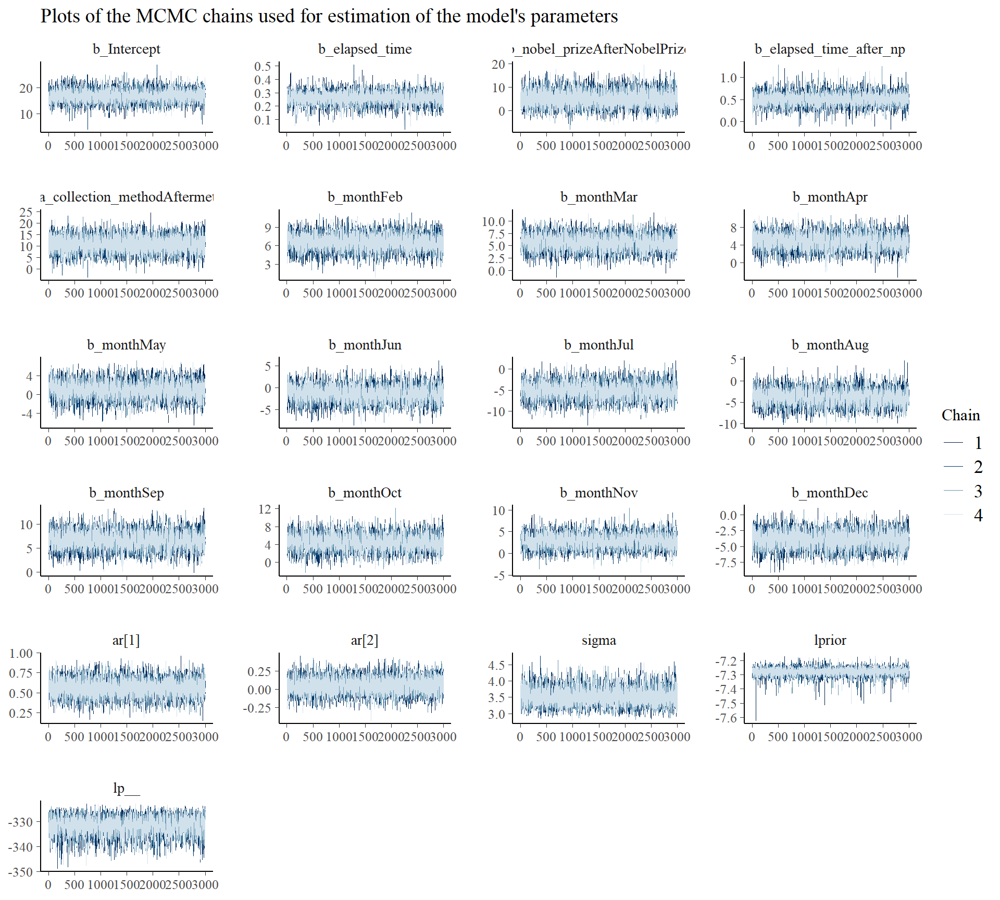
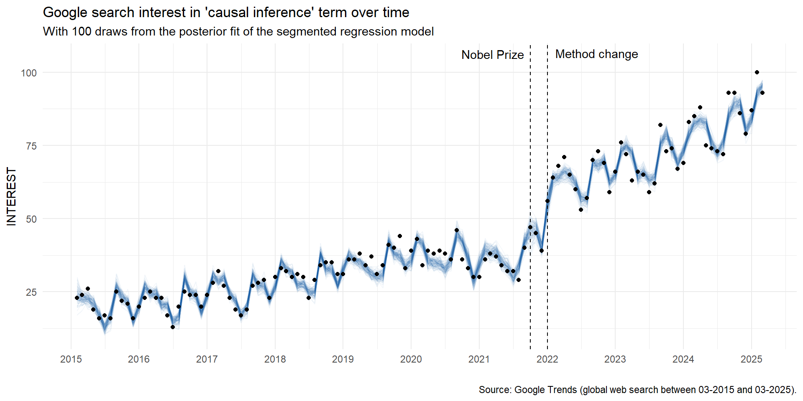
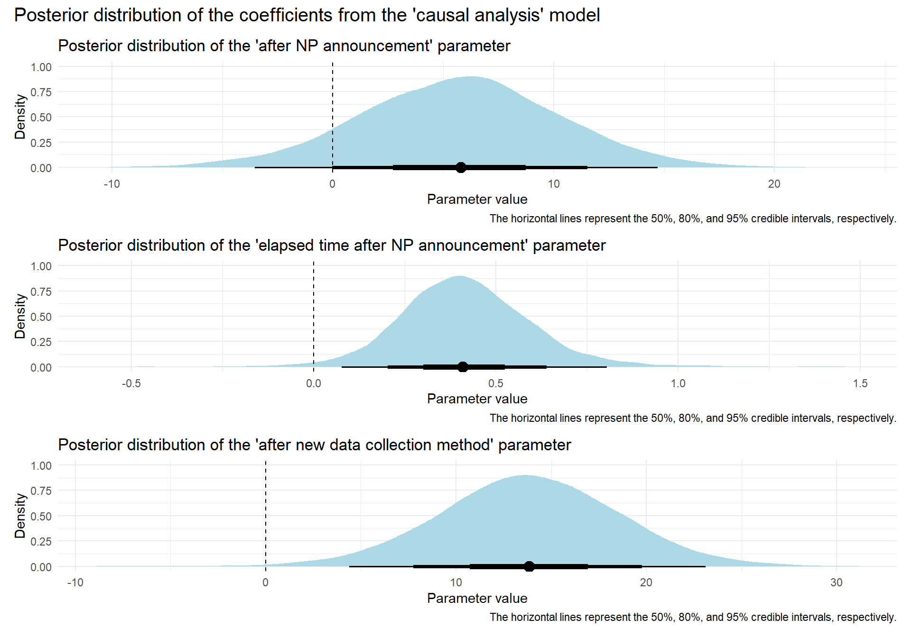
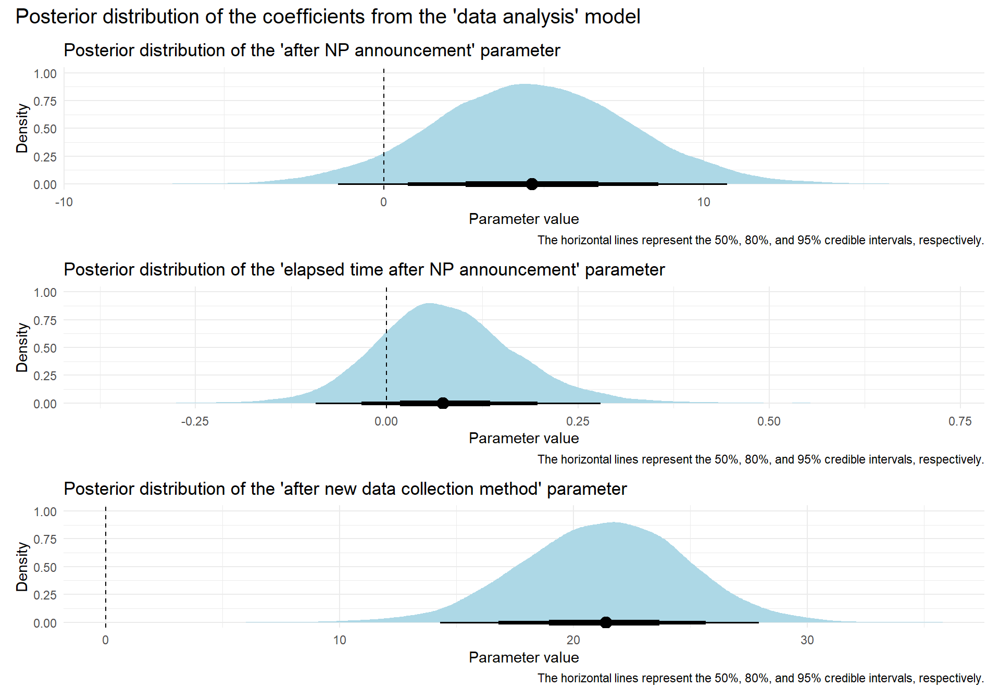

For me—and probably for many others—the final wake-up call to start taking causal inference seriously came when David Card, Joshua Angrist, and Guido Imbens were awarded the Nobel Prize (NP) in October 2021 for demonstrating “what conclusions about cause and effect can be drawn from natural experiments” using econometric methods.
This got me wondering if there was any concrete evidence that this event sparked broader interest—not just within my own bubble but across the wider public space.
My go-to tool for questions like this is Google Trends, which tracks the popularity of search terms over time and serves as a solid proxy for public interest. But there’s a snag: Google occasionally changes its data collection methods, causing artificial jumps in the statistics. Unfortunately for me, one of these changes happened shortly after the NP announcement.
Luckily, segmented regression for interrupted time series—a method I used to model shifts in interest levels and trends after the NP announcement—can easily account for such external shocks.
So, what did the analysis of the search term “causal inference” (based on global data from the past 10 years) actually show? The evidence for immediate increase in interest was rather faint (especially compared to the spike due to Google’s data collection update), but a steeper upward trend was quite clear in the months following the NP announcement. I also run a kind of refutation test, when looking at two related terms—“causal analysis” and “data analysis”—expecting only the first to show a similar, though probably weaker, pattern. And indeed, “causal analysis” behaved similarly to “causal inference”, while “data analysis” showed only the method-change-related spike, adding credibility to the NP effect hypothesis. But it’s still possible that there was an additional concurrent event, unknown to me, that could partially or fully explain the pattern. 🤔
If you’re interested, you can find the analysis details—along with the code and data—below.
By the way, if you haven’t jumped on the causality bandwagon yet, there’s plenty of great material available. Staying close to the Nobel laureates, Joshua Angrist co-authored a couple of super accessible books: “Mastering ’Metrics: The Path from Cause to Effect” and “Mostly Harmless Econometrics: An Empiricist’s Companion”. He also offers an excellent video series, “Mastering Econometrics”, available on YouTube.
Appendix: Deep dive for the curious 🤓
Let’s import the necessary packages for our analysis, along with the dataset. The data was downloaded from Google Trends and includes global web search interest from March 2015 to March 2025 for the following three search terms: “causal inference”, “causal analysis”, and “data analysis”.
Show code
# uploading libraries
library(tidyverse)
library(lubridate)
library(DT)
library(brms)
library(tidybayes)
library(bayesplot)
library(ggdist)
library(patchwork)
library(parallel)
# uploading the data downloaded from the Google Trends site (global web search between 03-2015 and 03-2025)
causal_inference <- 'causal_inference'
causal_analysis <- 'causal_analysis'
data_analysis <- 'data_analysis'
causal_inference_df <- read.csv(stringr::str_glue("multiTimeline_{causal_inference}.csv"), header = TRUE, skip = 1)
causal_analysis_df <- read.csv(stringr::str_glue("multiTimeline_{causal_analysis}.csv"), header = TRUE, skip = 1)
data_analysis_df <- read.csv(stringr::str_glue("multiTimeline_{data_analysis}.csv"), header = TRUE, skip = 1)
# setting new col names
colnames(causal_inference_df) <- c('date', 'causal_inference')
colnames(causal_analysis_df) <- c('date', 'causal_analysis')
colnames(data_analysis_df) <- c('date', 'data_analysis')
# putting all three dfs into one df
all_df <- causal_inference_df %>%
dplyr::bind_cols(causal_analysis_df %>% dplyr::select(causal_analysis)) %>%
dplyr::bind_cols(data_analysis_df %>% dplyr::select(data_analysis))
# changing the date var format from char to date
all_df <- all_df %>%
dplyr::mutate(date = lubridate::ym(date))
# dplyr::glimpse(all_df)
# showing data in the table
DT::datatable(
all_df,
class = 'cell-border stripe',
filter = 'top',
extensions = 'Buttons',
fillContainer = FALSE,
rownames= FALSE,
options = list(
pageLength = 5,
autoWidth = TRUE,
dom = 'Bfrtip',
buttons = c('copy'),
scrollX = TRUE,
selection="multiple"
)
)First, let’s visually examine how interest in these three search terms has evolved over time, including two key events: the announcement of NP in October 2021 and the change in data collection methods in January 2022. At a glance, the search patterns appear fairly similar across the three terms, though there seem to be subtle differences—particularly in the steepness of the slope following the NP announcement and the method change. However, our eyes and brains can easily be misled by random noise, so to more reliably tell signal from noise in the data, it’s safer to take the help of statistical modeling.
Show code
all_df %>%
tidyr::pivot_longer(causal_inference:data_analysis, names_to = 'term', values_to = 'interest') %>%
dplyr::mutate(
term = stringr::str_to_title(stringr::str_replace_all(term, '_', ' ')),
term = factor(term, levels = c("Causal Inference", "Causal Analysis", "Data Analysis"))
) %>%
ggplot2::ggplot(aes(x=date, y=interest)) +
ggplot2::geom_point() +
ggplot2::geom_line() +
ggplot2::facet_wrap(~term, nrow = 3) +
# highlighting Nobel Prize announcement and change in the data collection method
ggplot2::geom_vline(xintercept = as.Date('2021-10-01'), linetype='dashed') +
ggplot2::geom_vline(xintercept = as.Date('2022-01-01'), linetype='dashed') +
ggplot2::annotate(
"text",
x = as.Date("2021-10-01"),
y = 105,
label = "Nobel Prize",
hjust = 1.1,
vjust = 0,
size = 3
) +
ggplot2::annotate(
"text",
x = as.Date("2022-01-01"),
y = 105,
label = "Method change",
hjust = -0.1,
vjust = 0,
size = 3
) +
ggplot2::scale_x_date(date_breaks = "1 year", date_labels = "%Y") +
ggplot2::labs(
title = stringr::str_glue("Google search interest in selected terms over time"),
x="",
y="INTEREST",
caption = "Source: Google Trends (global web search between 03-2015 and 03-2025)."
) +
ggplot2::theme_minimal() +
ggplot2::theme(
strip.text = element_text(size = 11, face = 'bold')
)Since we’re working with time series data, it’s important to check for the presence of seasonality and autocorrelation to determine whether—and how—these factors should be incorporated into our model. Here, we explicitly examine only the “causal inference” search term, as it is our primary outcome variable of interest. However, in the original analysis, this check was also performed for the two remaining search terms. The seasonal-trend decomposition plot and the autocorrelation function (ACF) plot both reveal meaningful patterns: a clear seasonal trend and significant autocorrelation at a lag of 2, respectively. We will account for these in our model by including a month variable and an appropriate autocorrelation term.
Show code
Show code
# ACF plot for checking the 'depth' of autocorrelation
acf(my_ts, lag.max = 40, main="ACF plot (with max lag 40)")As mentioned in the main text, to model Google search interest, we will use a segmented regression model with the following general structure:
\[Y_{t} = β_{0} + β_{1}*time_{t} + β_{2}*intervention_{t} + β_{3}*time after intervention_{t} + e_{t}\]
The β0 coefficient estimates the baseline level of the outcome variable at time zero; β1 coefficient estimates the change in the mean of the outcome variable that occurs with each unit of time before the intervention (i.e. the baseline trend); β2 coefficient estimates the level change in the mean of the outcome variable immediately after the intervention (i.e. from the end of the preceding segment); and β3 estimates the change in the trend in the mean of the outcome variable per unit of time after the intervention, compared with the trend before the intervention (thus, the sum of β1 and β3 equals to the post-intervention slope). For a better understanding of the model, take a look at the illustrative chart taken from Turner et al. (2021) below.

Since we are dealing with correlated and truncated data, we will also include two additional terms in the model—an autocorrelation term with lag 2 and a truncation term, to handle these specific properties of our data.
As follows from the above, in order to perform segmented regression, we need to enrich the original dataset with several additional variables:
Elapsed time – a numerical variable representing the number of months that have passed since the beginning of the whole time series. This variable allows us to estimate the overall trend in the data.
Nobel Prize – a binary variable indicating whether the Nobel Prize announcement has already occurred. This enables us to estimate any immediate level change in interest following the event.
Elapsed time after Nobel Prize announcement – a numerical variable indicating the number of months since the Nobel Prize announcement. This allows us to assess any change in the trend of interest after the event.
Data collection method change – a binary variable marking whether the change in data collection method has already taken place. This helps estimate any immediate level shift caused by the event and control for its effect on the outcome of interest. (We assume this event influences only the level—not the trend—so no elapsed time variable is included for this event.)
Month – a categorical variable representing the specific month within a year. This allows us to control for seasonal effects in the model.
Show code
# enriching and munging the data
modeling_data <- all_df %>%
dplyr::mutate(
month = lubridate::month(date,label = TRUE, abbr = TRUE),
month = factor(month, levels = c("Jan","Feb","Mar","Apr","May","Jun","Jul","Aug","Sep","Oct","Nov","Dec"), labels = c("Jan","Feb","Mar","Apr","May", "Jun","Jul","Aug","Sep","Oct","Nov","Dec"), ordered = FALSE)
) %>%
# arranging data in ascending order by date
dplyr::arrange(date) %>%
# creating new variables
dplyr::mutate(
elapsed_time = row_number(),
nobel_prize = case_when(
date >= '2021-10-01' ~ 1,
TRUE ~ 0
),
elapsed_time_after_np = cumsum(nobel_prize),
nobel_prize = factor(ifelse(nobel_prize == 1, "After Nobel Prize", "Before Nobel Prize"), levels = c("Before Nobel Prize", "After Nobel Prize")),
new_data_collection_method = case_when(
date >= '2022-01-01' ~ 1,
TRUE ~ 0
),
new_data_collection_method = factor(ifelse(new_data_collection_method == 1, "After method change", "Before method change"), levels = c("Before method change", "After method change")),
)
# dplyr::glimpse(modeling_data)
# showing data in the table
DT::datatable(
modeling_data,
class = 'cell-border stripe',
filter = 'top',
extensions = 'Buttons',
fillContainer = FALSE,
rownames= FALSE,
options = list(
pageLength = 5,
autoWidth = TRUE,
dom = 'Bfrtip',
buttons = c('copy'),
scrollX = TRUE,
selection="multiple"
)
)Now, let’s specify our segmented regression model for Google search interest in causal inference, fit it using the brms package for Bayesian regression modeling, and verify whether the model has successfully converged and provides a reasonable fit to the outcome variable—before proceeding to interpret the estimated coefficients. The MCMC chain plots, the posterior predictive check, and the data overlaid with draws from the posterior fit of the model all indicate that the model fitting was successful.
Show code
# defining the statistical model for the 'causal inference' search term
causal_inference_model <- brms::brm(
causal_inference | trunc(lb = 0, ub = 100) ~ elapsed_time + nobel_prize + elapsed_time_after_np + new_data_collection_method + month + ar(p = 2),
data = modeling_data,
family = gaussian(),
# prior = priors, # let's use default, non-informative priors
chains = 4,
iter = 5000,
warmup = 2000,
control = list(adapt_delta = 0.98),
seed = 12345,
silent = 2,
refresh = 0,
cores = parallel::detectCores()
)
# summary(causal_inference_model)
# plotting the MCMC chains
bayesplot::mcmc_trace(
causal_inference_model,
facet_args = list(nrow = 6)
) +
ggplot2::labs(
title = "Plots of the MCMC chains used for estimation of the model's parameters"
)
Show code
# visualizing original data overlaid with draws from the posterior fit of the model
data_with_fitted_model <- function(model, search_term_name) {
g <- modeling_data %>%
tidybayes::add_epred_draws(model, ndraws = 100) %>%
ggplot2::ggplot(aes(x = date, y = .data[[search_term_name]])) +
ggplot2::geom_line(aes(y = .epred, group = .draw), alpha = 1/20, color = "#08519C") +
ggplot2::geom_point(data = modeling_data) +
ggplot2::geom_vline(
xintercept = as.Date('2021-10-01'),
linetype = 'dashed'
) +
ggplot2::geom_vline(
xintercept = as.Date('2022-01-01'),
linetype = 'dashed'
) +
ggplot2::annotate(
"text",
x = as.Date("2021-10-01"),
y = 105,
label = "Nobel Prize",
hjust = 1.1,
vjust = 0.1
) +
ggplot2::annotate(
"text",
x = as.Date("2022-01-01"),
y = 105,
label = "Method change",
hjust = -0.1,
vjust = 0
) +
ggplot2::scale_x_date(date_breaks = "1 year", date_labels = "%Y") +
ggplot2::labs(
title = stringr::str_glue("Google search interest in '{stringr::str_replace_all(search_term_name, '_', ' ')}' term over time"),
subtitle = "With 100 draws from the posterior fit of the segmented regression model",
x = "",
y = "INTEREST",
caption = "Source: Google Trends (global web search between 03-2015 and 03-2025)."
) +
ggplot2::theme_minimal()
return(g)
}
data_with_fitted_model(model=causal_inference_model, search_term_name = "causal_inference")
Now we can examine the estimated coefficients of interest. The evidence for an immediate increase in interest following the NP announcement is not particularly strong—especially when compared to the spike caused by Google’s data collection update. However, a noticeably steeper upward trend is evident in the months following the NP announcement.
Show code
# function for creating posterior plots
posterior_plots <- function(model, search_term_name){
# visualizing posterior distribution of the 'after Nobel Prize announcement' parameter from the fitted model
g1 <- model %>%
tidybayes::gather_draws(b_nobel_prizeAfterNobelPrize) %>%
dplyr::rename(value = .value) %>%
ggplot2::ggplot(aes(x = value)) +
ggdist::stat_halfeye(
fill = "lightblue",
.width = c(0.5, 0.8, 0.95),
interval_size_domain = c(1,4)
) +
ggplot2::geom_vline(
xintercept = 0,
linetype='dashed'
) +
ggplot2::labs(
title = "Posterior distribution of the 'after NP announcement' parameter",
y = 'Density',
x = 'Parameter value',
caption = 'The horizontal lines represent the 50%, 80%, and 95% credible intervals, respectively.'
) +
ggplot2::theme_minimal()
# visualizing posterior distribution of the 'elapsed time after Nobel Prize announcement' parameter from the fitted model
g2 <- model %>%
tidybayes::gather_draws(b_elapsed_time_after_np) %>%
dplyr::rename(value = .value) %>%
ggplot2::ggplot(aes(x = value)) +
ggdist::stat_halfeye(
fill = "lightblue",
.width = c(0.5, 0.8, 0.95),
interval_size_domain = c(1,4)
) +
ggplot2::geom_vline(
xintercept = 0,
linetype='dashed'
) +
ggplot2::labs(
title = "Posterior distribution of the 'elapsed time after NP announcement' parameter",
y = 'Density',
x = 'Parameter value',
caption = 'The horizontal lines represent the 50%, 80%, and 95% credible intervals, respectively.'
) +
ggplot2::theme_minimal()
# visualizing posterior distribution of the 'after new data collection method' parameter from the fitted model
g3 <- model %>%
tidybayes::gather_draws(b_new_data_collection_methodAftermethodchange) %>%
dplyr::rename(value = .value) %>%
ggplot2::ggplot(aes(x = value)) +
ggdist::stat_halfeye(
fill = "lightblue",
.width = c(0.5, 0.8, 0.95),
interval_size_domain = c(1,4)
) +
ggplot2::geom_vline(
xintercept = 0,
linetype='dashed'
) +
ggplot2::labs(
title = "Posterior distribution of the 'after new data collection method' parameter",
y = 'Density',
x = 'Parameter value',
caption = 'The horizontal lines represent the 50%, 80%, and 95% credible intervals, respectively.'
) +
ggplot2::theme_minimal()
# combining all charts into one plot
g <- g1 / g2 / g3 +
patchwork::plot_annotation(
title = stringr::str_glue("Posterior distribution of the coefficients from the '{stringr::str_replace_all(search_term_name, '_', ' ')}' model"),
theme = theme(plot.title = element_text(size = 15))
)
return(g)
}
# visualizing posterior distribution of estimated coefficients of interest
posterior_plots(model=causal_inference_model, search_term_name = "causal_inference")To test the robustness of our conclusions regarding the NP hypothesis, let’s perform a kind of refutation test by examining whether a similar pattern appears in the closely related term “causal analysis”, but not in the less closely related term “data analysis”. For brevity, we won’t run the full analysis pipeline here for these additional search terms; instead, we’ll only fit the model and check the posterior coefficient estimates—but rest assured that all the necessary steps were conducted in the original analysis (and you can always replicate it yourself using the code above to make sure I didn’t make any mistakes 😉). So, what are the results? As you can see in the charts below, “causal analysis” indeed behaves similarly to “causal inference”, while “data analysis” shows only the spike related to the method change. This lends additional credibility to the NP effect hypothesis. However, it’s still possible that an additional, unknown concurrent event could partially or fully explain the observed pattern. 🤔
Show code
# defining the statistical model for the 'causal analysis' search term
causal_analysis_model <- brms::brm(
causal_analysis | trunc(lb = 0, ub = 100) ~ elapsed_time + nobel_prize + elapsed_time_after_np + new_data_collection_method + month + ar(p = 2),
data = modeling_data,
family = gaussian(),
# prior = priors, # let's use default, non-informative priors
chains = 4,
iter = 5000,
warmup = 2000,
control = list(adapt_delta = 0.98),
seed = 12345,
silent = 2,
refresh = 0,
cores = parallel::detectCores()
)
# summary(causal_analysis_model)
# visualizing posterior distribution of estimated coefficients of interest
posterior_plots(model=causal_analysis_model, search_term_name = "causal_analysis")
Show code
# defining the statistical model for the 'data analysis' search term
data_analysis_model <- brms::brm(
data_analysis | trunc(lb = 0, ub = 100) ~ elapsed_time + nobel_prize + elapsed_time_after_np + new_data_collection_method + month + ar(p = 2),
data = modeling_data,
family = gaussian(),
# prior = priors, # let's use default, non-informative priors
chains = 4,
iter = 5000,
warmup = 2000,
control = list(adapt_delta = 0.98),
seed = 12345,
silent = 2,
refresh = 0,
cores = parallel::detectCores()
)
# summary(data_analysis_model)
# visualizing posterior distribution of estimated coefficients of interest
posterior_plots(model=data_analysis_model, search_term_name = "data_analysis")